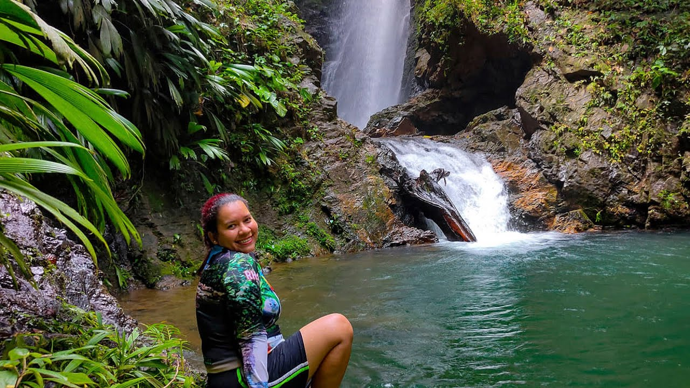

Cascada el Mohan


Sumérgete en la belleza de la Cascada El Mohan, un impresionante salto de agua que invita a la aventura y el relax. Este lugar mágico, rodeado de exuberante vegetación, es perfecto para disfrutar de un día en la naturaleza, refrescarte en sus aguas cristalinas y explorar los senderos cercanos. El murmullo del agua y la diversidad de flora que la rodea crean un ambiente sereno y revitalizante. La Cascada El Mohan es un destino que combina la belleza natural con la paz que solo la naturaleza puede ofrecer.